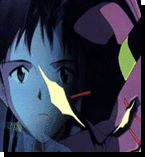
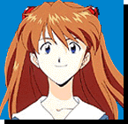
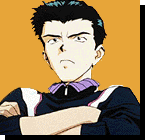

| 
| Pilot Overview Main Characters |
| Ikari, Shinji Shinji is the main character, and pilots Eva Unit 1. He is often reffered to as the 'third child', and is often referred to just as 'Ikari', even by his father Gendou. Shinji hasn't had an easy life. After te death of his mother at a very ealy year in his development, Shinji grew away from his father, who distanced himself from the world to work on the evangelions and the destruction of the angels, and to head NERV. Eventuallty, Shinji ran away from his father, severing what little family relations there were between himself and his father. With this, Shinji suddenly felt himself orphaned from the world, and his depression starts. At the start of the series, Shinji finds himself called to work for the organisation headed by his father, and is scared by and negative towards his father and those around him, perhaps fearing his father's wrath for past deeds. When Misato Katsuragi takes Shinji into residence with her, Shinji's feeling start to show through and we see he is harboring a need for love and acceptance from his father, and is capable of giving more than he felt capable of. Shinji's main drive is his anger, not towards others, but at himself for not being capable of expressing his true feelings towards himself and others. | |
|  | Sorya, Asuka Langley Asuka is headstrong and very loud. She's attractive, and relies on thar attractiveness for popularity and self-confidence, so when people begin to dig below her ego, her self-confidence can drop unexpectedly. She's referred to as the 'Second Child'. She comes from a German family, though she has roots in Japan as well, and speaks both languages fluently. Asuka and Rei do not get along all that well, however, as they work together and go to school together, Asuka feels a special kind of bond between herself and Rei, if only the bond of contempt between them, and thus opens herself to Rei. Asuka has a tendancy to go to peices in a time of crisis, and although she deosn't doubt her own abilities, when she isn't thought of of the best in the group, or when she makes a mistake, she loses control and can tend to blurt out things about other people, often alienating them from her. Asuka's main driving force is her ego, the will to be the best, but her fear of opening up and showing her real feeling sometimes lets her down. |
| Anayami, Rei Perhaps the most mysterious character in the series, Rei is also one of the most favourite amongst the show's followers. Rei is the 'First Child', and is referred to as such solely by Asuka. She is shy. She opens up a little to Commander Gendou Ikari, a relationship that baffles Shinji, but remains aloof from those who would be regarded as her friends. She rarely speaks to anyone, even Commander Ikari, and performs well in school, perhaps to avoid communicating with the other students. She harbours feelings towards Shinji, which appears to go beyond a typical friendship, bordering on kinsmanship. These feelings may stem from one of a few sources, from gratitude that Shinji tries to get along with her, to love that one would feel towards family. Shinji often thinks of his mother when talking to Rei. Rei find it hard to express feeling, to even smile. Her daily life is spent mostly in soliloquy, bent on uderstanding herself, on who she is, where she came from. Records of Rei's history have been lost, though it's probable that Commander Ikari knows much of it. Most of what we see of Rei is through her relationship with Commander Ikari. She is caught within some vast experiment, the purpose of which she cannot herself say, but of which Commander Ikari and the first angel are deeply involved. | |
|  | Suzuhara, Touji Touji Suzuhara goes to school with Shinji and the others. He's physically larger and seems older than the other students, an advantage he uses partly to bully his classmates, though his tendancy to bully has waned since the arrival of Shinji and Asuka. In the attack of the thirl angel, his sister is hurt and he blames the pilots of the Evas for this. When he learns that the Evas pilots are in fact his classmates, he begins to reasses his beliefs in the Evas. He is chosen to be the 'Fourth Child' and thus is set to pilot Eva Unit 3, though he has mixed feelings about piloting an Evangelion, mainly due to his sister's accident. Plus, in his trial run as pilot of Unit 3 an angel is discovered in the body of the unit and the unit is destroyed by Unit 1's dummy plug system, and is almost killed by the incident. Touji has an amiable character streak which endears him to many of his classmates and those who know him. |
 |